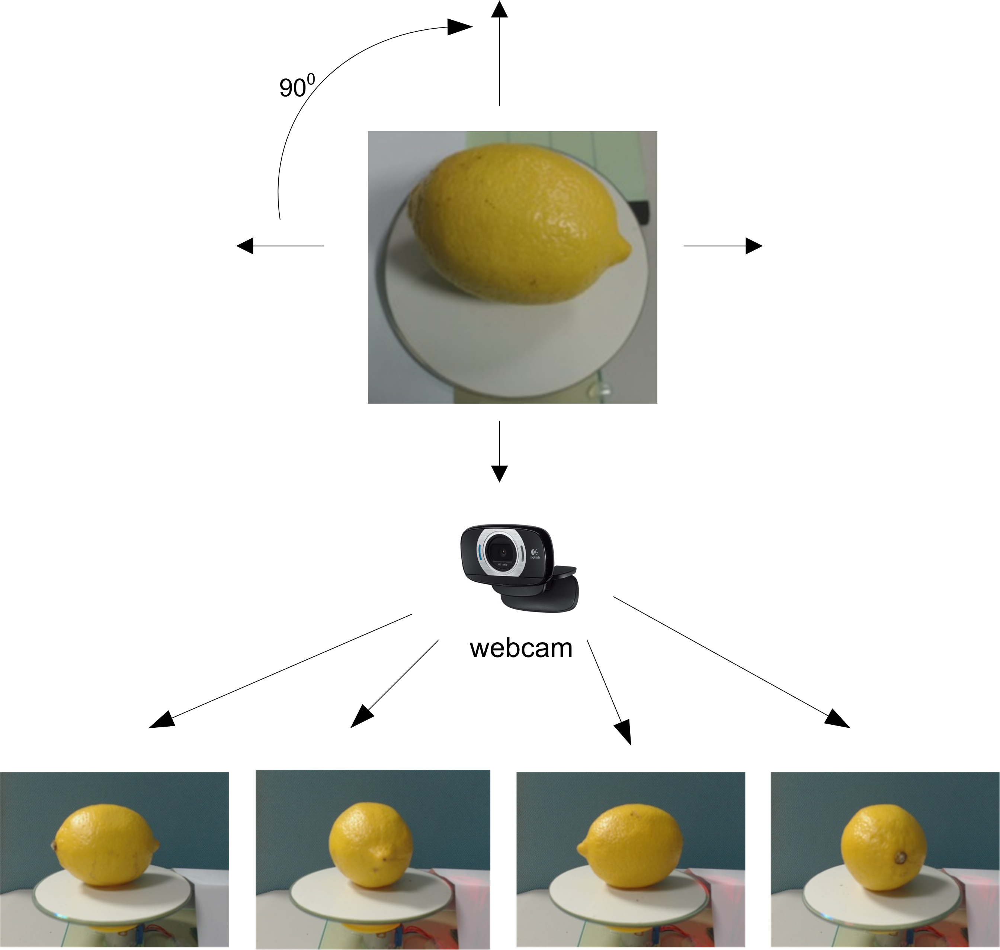
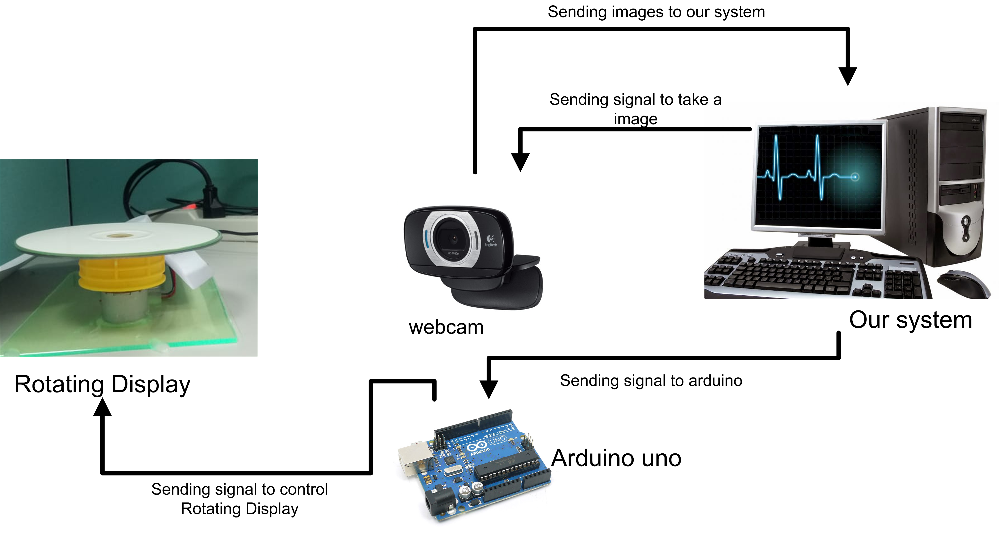
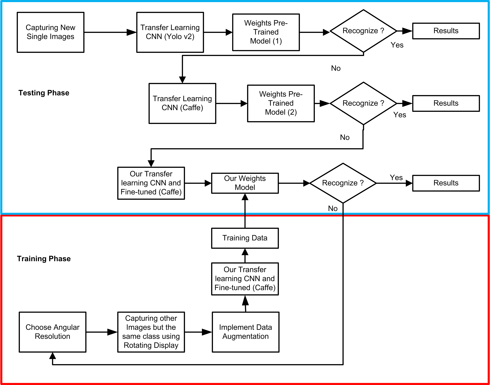
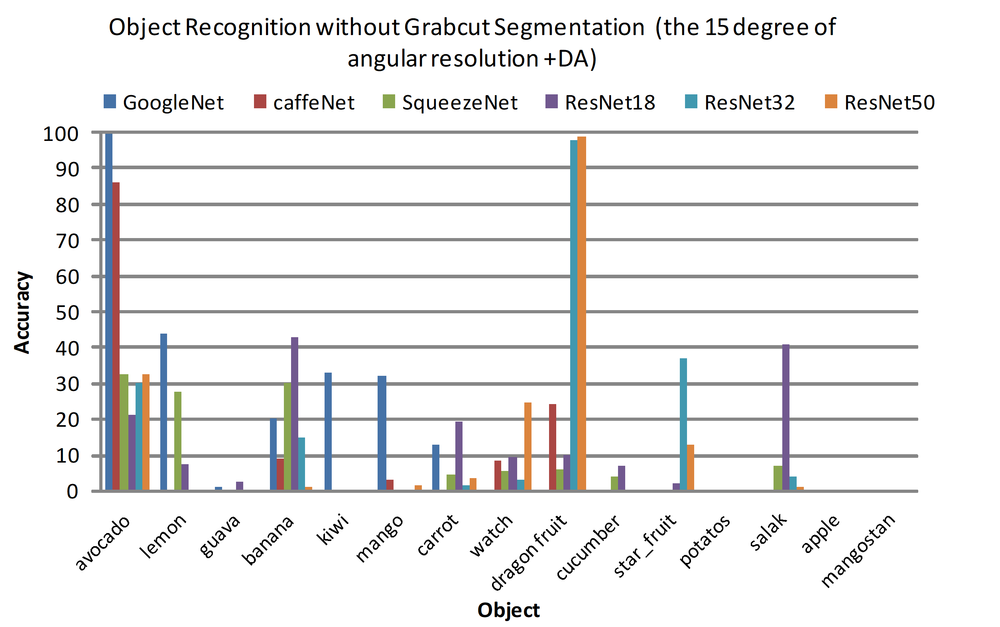
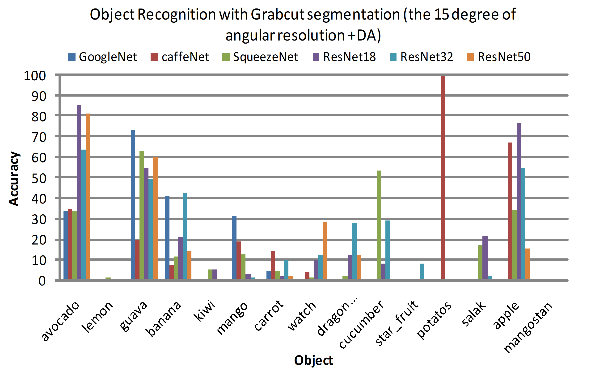
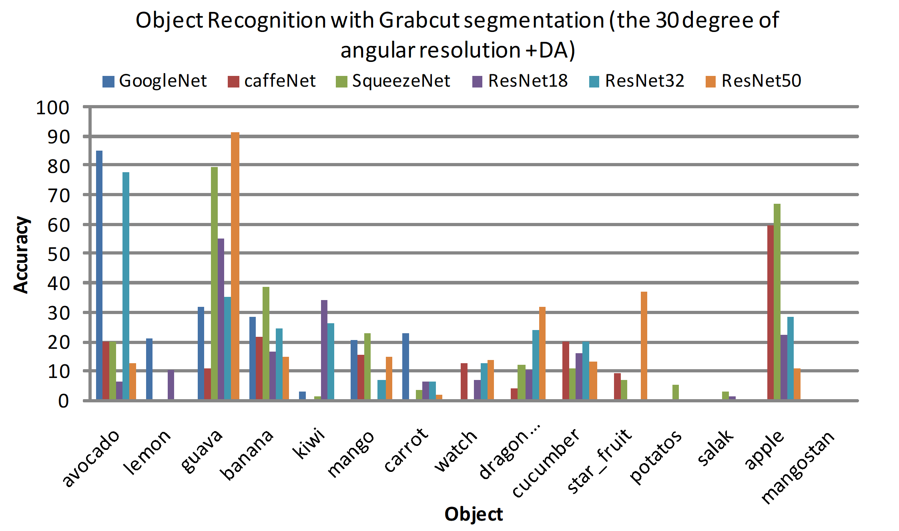
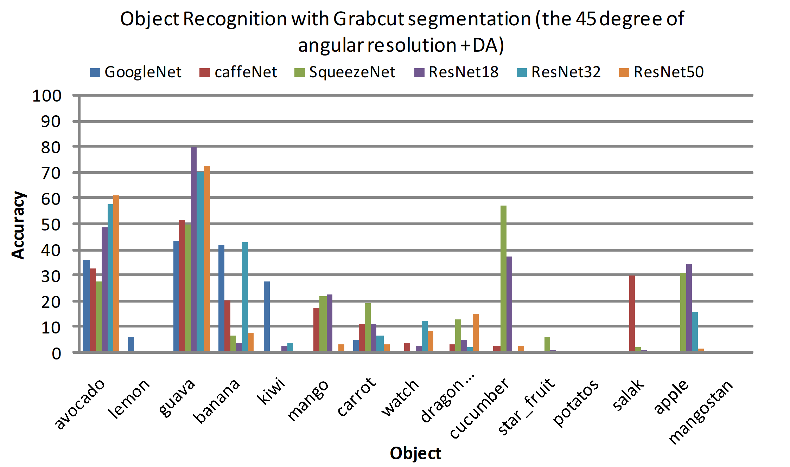
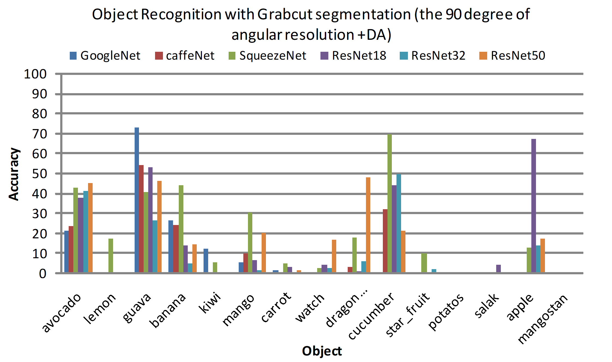
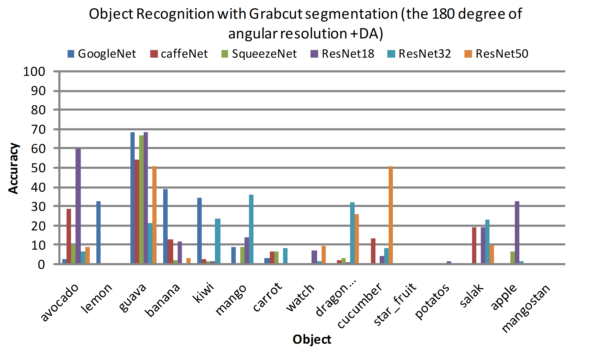

Achmad Lukman and Chuan-Kai Yang
Department of Information Management National Taiwan University of Science and Technology No. 43, Sec. 4, Keelung Road Taipei, 106, Taiwan D10509802@mail.ntust.edu.tw, ckyang@cs.ntust.edu.tw
Abstract
The development of 3D object recognition often requires a huge amount of data in the training process, especially when deep learning methods are involved so that the training can be convergent. The problem is that the availability of free 3D object datasets is usually quite limited, so some researchers have proposed several techniques to overcome this problem. In this work, we propose a novel algorithm, making use of angular resolutions and convolutional neural networks for 3D object recognition, and it collects image shapes or contours from real objects by placing them on a rotating display to record the appearances from multiple angular views. The chosen angular resolution is in the range of 0-180 degrees, and the selection of viewing angle is done by a binary search. We have conducted a comparative experiment on the accuracy of 6 well-known network architectures, including GoogleNet, CaffeNet, SqueezeNet, ResNet18, ResNet32, and ResNet50, to see how far these architecture networks can adapt to the angular resolution techniques that we propose for the classification of objects outside the lab environment. We also propose another way with the use of incremental learning, where we integrate our proposed method that uses GoogleNet model with two existing weights pretrained models, i.e., AlexNet and VGG16. In other words, our proposed method helps address the limitations of other models with the weights of existing pre-trained methods to recognize new classes that were not recognized.
Angular Resolution Algorithm
Algorithm 1 : Train CNN with Angular resolution|  | ||
| Figure 1: The number of images for the case of 90 degree. | ||
|  | ||
| Figure 2: The device makes use of angular resolutions. | ||
|  | ||
| Figure 3: Proposed system for integrating among GoogleNet weights model (model 3), AlexNet weights pre-trained model (Model 1) and VGG16 weights pre-trained model (Model 2) | ||
Result and Discussion
|  |  | |
| (a) | (b) | |
|
||
| (c) | ||
| Figure 4: The 15 degree of angular resolution + DA evaluation between without Grabcut segmentation(a) and with Grabcut segmentation(b) for difference 6 network architecture (GoogleNet, CaffeNet, SquezeeNet, ResNet18, ResNet32, ResNet50) | ||
|---|---|---|
|  |  | |
| (a) | (b) | |
|  |  | |
| (c) | (d) | |
| Figure 5: Angular resolution evaluation uses Grabcuts segmentation for datasets outside the lab environment | ||
Conclusion and Future Work
The test results show that the novelty of our angular-resolution algorithm can generally be used for object recognition, together with creating a new dataset that was not available, and the effect of choosing different angular resolutions on an object can cause variations in the recognition accuracy of the system. Our results of this study are divided into two scenarios: the first scenario is the classification process of objects taken in the lab using angular resolution without using the Grabcut segmentation, and this scenario compares the three transfer learning models, namely CaffeNet, GoogleNet, and SqueezeNet. The results of this comparison show that GoogleNet is superior in the accuracy of recognition of objects that reaches 98.70% for kiwi, followed by SqueezeNet with the accuracy of 96.81% on kiwi and staples. The second scenario uses the same training data but the testing data is taken from outside the lab, and we add ResNet18, ResNet32 and ResNet50, where the evaluation results show that SqueezeNet, ResNet18 and ResNet32 are better on adapting to datasets outside the lab environment, although the accuracy of the introduction of avocado, guava, banana and apple is still inferior to the accuracy obtained by ResNet18 and ResNet32 on the 15 degree of angular resolution with Grabcut segmentation. For further research, we will try to overcome the limitations of this research, that is, to make it more flexible for recognizing more objects.
Compliance with Ethical Standards
This work was supported in part by the Ministry of Science and Technology of Taiwan under the grant MOST 106- 2221-E-011-148-MY3. Conflict of Interest: Both authors have received the aforementioned funding support and both authors have no conflict of interest.